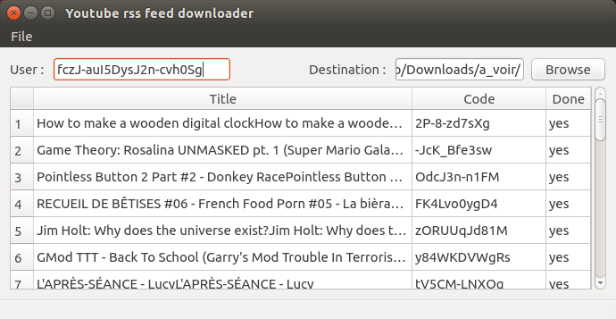

Introduction
This software is simply an interface for using youtube-dl (http://yt-dl.org/) as a local RSS feed. You simply enter your youtube user id and the application will automaticaly download the lattest videos from the channels you follow on youtube. No more buffering the entire video is saved on your computer as a regular video file.

How to install
This application is codded using QT5 and have only been tested on ubuntu running unity until now. For installing QT5 you can simply do :
$ sudo apt-get install libqt5widgets5
Then download the app and run it :
| OS | i386 (32 bits) | amd64 (64 bits) |
| Linux |
here |
here |
How to configure
To work the application just need your youtube user ID. For that you simply need to go into your youtube settings, then click on advanced (under your address mail, next to your avatar), and there you get a few weard strings including the user ID, the one we are searching for. You simply need to add this string in the top left slot of the application and you are good to go.
How to contribute
The project if on github : here, please do fork and make the app better. If you want to participate but don't know how you got a list of stuff that needs to be implemented, corrected and simply made better : here.
If you got questions or remarqus about the app come talk to us : here.